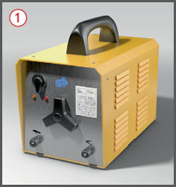
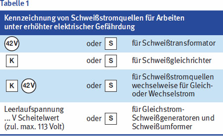
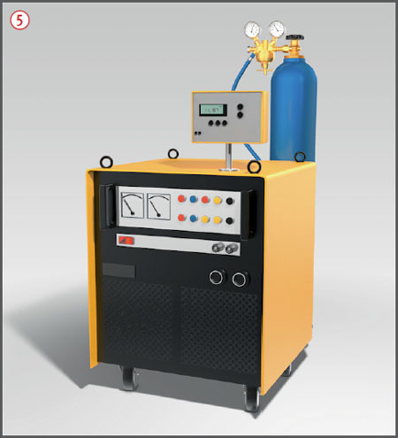

Es kann zu Bränden und Explosionen, Stromschlag, Verbrennungen der Haut, Verletzung der Augen und zu Vergiftung durch Gefahrstoffe kommen.

Allgemeines
Bei der Auswahl der Schweißstromquellen beachten, dass deren Bauart für den Betrieb
in trockenen Räumen oder
ungeschützt im Freien und/oder
unter erhöhter elektrischer Gefährdung
geeignet ist .
Nur einwandfrei isolierte Schweißleitungsverbinder benutzen.
Schutzmaßnahmen
Bei Schweiß-, Schneid- und Lötarbeiten in Bereichen mit Brand- und Explosionsgefahr muss eine Schweißerlaubnis vorliegen.
Alle brennbaren Teile aus der gefährdeten Umgebung entfernen.
Sicherheitsmaßnahmen zur Verhinderung einer Brandentstehung in der Schweißerlaubnis festlegen, insbesondere
nicht entfernbare brennbare Teile abdecken,
Öffnungen abdichten.
Während des Schweißens
geeignete Feuerlöschmittel, z. B. Pulverlöscher, bereitstellen.
Nach Beendigung der Arbeiten wiederholte Kontrolle der Arbeitsstelle auf Brandnester (Brandwache).
Netzleitungen, Schweißstromleitungen und Schlauchpaket gegen mechanische Beschädigungen schützen.
Schweißstromrückleitungen nicht provisorisch verlängern und möglichst direkt an das Werkstück anschließen .
Beschädigte Isolierbacken und Schweißdrahthalter sofort auswechseln.
Schweißdrahthalter und Schutzgasschweißbrenner nicht unter den Arm klemmen und nur auf isolierende Unterlagen ablegen.
Schweißerarbeitsplätze gegen andere Arbeitsplätze durch Aufstellen von Stellwänden oder Vorhängen abschirmen .
Das Zusammenschalten von Schweißstromquellen nur von einer Fachkraft ausführen lassen.
Für ausreichende Lüftung sorgen (Gefährdungsbeurteilung). Als kurzzeitig gilt, wenn die Brenndauer der Flamme oder des Lichtbogens täglich nicht mehr als eine halbe Stunde oder wöchentlich nicht mehr als zwei Stunden beträgt. Als länger dauernd gilt, wenn die Brenndauer die vorgenannten Werte überschreitet.
Beim Schweißen und Elektrodenwechsel Schweißerschutzhandschuhe aus Leder tragen.
Beim Schweißen Lederschürze oder schwer entflammbaren Schutzanzug und Schweißerschutzhandschuhe tragen. Zum Schutz vor UV-Strahlung hochgeschlossene Arbeitskleidung tragen.
Geeignete Schutzschirme oder Schutzschilde mit Schweißerschutzfilter der Schutzstufe 9-15 benutzen, für Schweißhelfer evtl. geringere Schutzstufe (1,2 bis 1,7) .

Zusätzliche Hinweise beim Schutzgasschweißen
Schutzgasflasche sicher aufstellen und gegen Umfallen sichern .
Drahthaspel nur im spannungsfreien Zustand wechseln. Achtung! – Stichverletzungen durch Drahtvorschub.

Zusätzliche Hinweise für Schweißarbeiten unter erhöhter elektrischer Gefährdung*
Bei Schweißarbeiten unter erhöhter elektrischer Gefährdung nur besonders gekennzeichnete Schweißstromquellen benutzen (Tabelle 1).
Isolierende Zwischenlagen (Gummimatten, Holzroste u. a.) verwenden.
Schwer entflammbare und trockene Kleidung sowie unbeschädigtes, trockenes Sicherheitsschuhwerk tragen.
Schweißstromquellen nicht in engen Räumen aufstellen.
* Erhöhte elektrische Gefährdung bei Schweißarbeiten besteht z. B.:
a) an Arbeitsplätzen, an denen die Bewegungsfreiheit begrenzt ist, so dass der Schweißer zwangsläufig (z. B. kniend, sitzend, liegend oder angelehnt) mit seinem Körper elektrisch leitfähige Teile berührt.
b) an Arbeitsplätzen, an denen bereits eine Abmessung des freien Bewegungsraumes zwischen gegenüberliegenden elektrisch leitfähigen Teilen weniger als 2 m beträgt, so dass der Schweißer diese Teile zufällig berühren kann.
c) an nassen, feuchten oder heißen Arbeitsplätzen, an denen der elektrische Widerstand der menschlichen Haut oder der Arbeitskleidung und der Schutzausrüstung durch Feuchtigkeit oder Schweiß erheblich herabgesetzt werden kann.
Arbeitsmedizinische Vorsorge
Arbeitsmedizinische Vorsorge nach Ergebnis der Gefährdungsbeurteilung veranlassen (Pflichtvorsorge) oder anbieten (Angebotsvorsorge). Hierzu Beratung durch den Betriebsarzt.